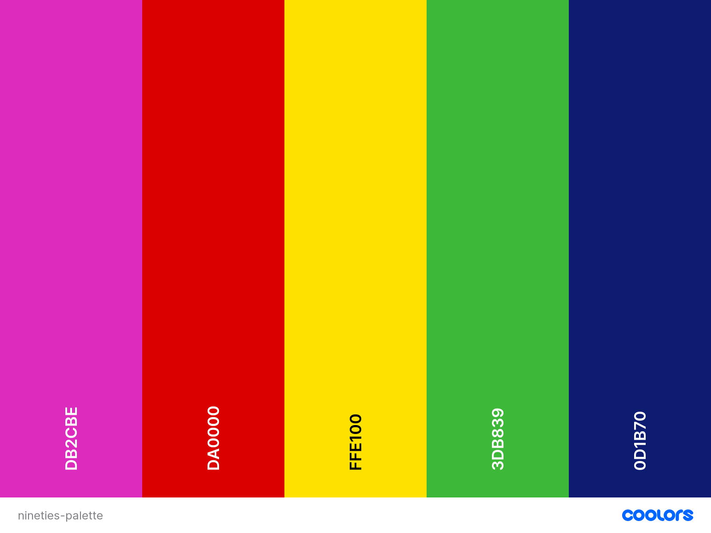

BODONI


The style
The Bodoni style is one of the most known styles between the XVIII and XIX centuries. The XVIII century is characterised by the presence of the philosophical ideas of the Enlightenment and from the Neoclassic artistic movement. Bodoni, in the light of the period in which he lived, created his style on the basis of some of the most important Enlightenment concepts, including the search for an originary pureness and the belief in the human reason. This influence is clear for example in the fact that this style is simple and rigorous, just like reason requires clearness and rigour. For example in the text there are only a few images, symbols or ornaments, since the reader focus has to be on the text, the core of a book. But at the same time the ideas of Neoclassicism are visible in the style and in the shape of Bodoni's works. Indeed some specifc aspects are characterised by the influence of the classic art. There is attention for the beauty and the readability of words. Serifs enlight the beauty of words and require wide spaces in order to be well readable. The beauty of the book is emphazised by its regular proportions just like the ones that guided the ancient greek sculptures hand. The search for a classical beauty is never oppressed by the rigour but at the same time beauty never prevents a good readability. Bodoni himself in his 'Manuale tipografico' says: 'l'idea del Bello non dee certamente confondersi con quella del Buono e dell'Utile; ma elle sono però come tre diversi aspetti di una cosa sola [...]'. ======= Bodoni, influenced by both the innovations and ideas of his historical period, created his style on the basis of some of the most important Enlightenment concepts, including the search for an originary pureness and the belief in the human reason. This influence is clear, for instance, in the fact that his style is simple and rigorous, just like reason requires clearness and rigour. Like Bodoni writes in his Manuale tipografico, book shall be read by as many people and as many times as possible in order to let good books and good contents to be of use and pleasant. For example in his books there are only a few images, symbols or ornaments, since the reader focus has to be on the text, the core of a book.
At the same time the ideas of Neoclassicism are visible in the style and in the shape of Bodoni's works. Indeed some specifc aspects are characterised by the influence of the classic art. There is great attention for the beauty and the architecture of the single elements and of the contents in general. For instance the characters are decorated with refined serifs enlight, which, together with proportionated spaces, enance the beauty and the readability of words. The beauty of the book is emphazised by its regular proportions, a clear reference to the classic world. Therefore we can state that the search for a classical beauty is never oppressed by the rigour but at the same time beauty never prevents a good readability. It is instead at its service. Bodoni himself in his 'Manuale tipografico' says: 'l'idea del Bello non dee certamente confondersi con quella del Buono e dell'Utile; ma elle sono però come tre diversi aspetti di una cosa sola [...]'.
Font and measures
General assumptions
Bodoni characters present “thin, horizontal serifs, vertical axes, high contrast between thick and thin strokes and round terminations on certain lowercase letters.“ The presence of serif forces, in order to have a good readability, to set the letters large enough to ensure that the hairlines maintain their integrity. Letter spacing must be proportionate to the font size: the higher the size, the bigger the space in order to allow the best readability, in particular for large titles. Text character spacing should also be kept open and even. Normal or even a little extra line spacing will also help to offset the strong vertical emphasis of Bodoni.
The text usually fits one column which can sometimes be surrounded by straight lines. Moreover column width must be kept moderate since very long lines of Bodoni tend to tire the eye and make reading difficult. Indeed it respects the gold section proportions which have been generically acquired by the print in order to allow a good readability.
Font
The fonts used in this magazine are 'Bodony 6 ITC' and 'Bodoni 72 ITC'. These are not original Bodoni's. During the following centuries there have been a lot of remaking of the Bodoni font, each of them based on a different font (with regard to the Bodoni's 'Manuale tipografico'). Each of them was produced for a peculiar need and by a specific team with different purposes and with a different distancing from the original font. The Bodoni ITC fonts were produced in the 90s and 'applied differences in design and proportions to the typeface in digital'. They were produced by two different teams: 'ITC Bodoni Six, curated [...] by Goldsmith, was based on Filosofia Bassano by Bodoni'. It was designed 'after a comparative analysis of examples found in the Manuale tipografico' for small bodies. ITC Bodoni Seventytwo, curated by Fishman, was modelled on Papale, the larger dimension Bodonian typeface. Indeed it was designed for large body text.
Layout
Both in the cover page and in the articles the text is represented in one single column. The margins follow the measures of the gold ratio (see below), typical of the printing books in particular in the XVIII century one.
The background for the cover is given by the overlap of an old fashioned paper on a special coloured paper derived from a Bodoni's book. The articles have instead the simple old fashioned paper. Both the cover page and the opening of the articles are presented as the introductive page of a Bodoni's book in the sequence: title, subtitle, author, image and date. They almost are in Bodoni 72. Between the heading and the text there is a The body of the articles (sizes and spaces) are based onthe body of some Bodoni's prose books. The exceptions are the publication note, which is in the style of Bodoni's dedication poetry to marquise Anna Malaspina, and the images descriptions, which are in the same style and size of the publication date. In both these last cases the choices are arbitrary since I could find no similar example. The images have been modified so that the colour recalss the mixture of black and white and sepia of the Bodoni's images. The picture sizes are based, in the first one in the 'preface' as the Tasso's image in 'Aminta', all the others as the picture of Bodoni in the 'Manuale tipografico'. The text has the colour of the black ink, still used in the ancient printing machines. HYPHENS + TEXT JUSTIFICATION FIRST LETTER INDENTATION The background for the cover is given by the overlap of an old fashioned paper on a special coloured paper derived from a Bodoni's book. The articles background is instead simply based on the same old fashioned paper. Both the cover page and the heading of the articles are presented as the introductive page of a Bodoni's book, in the second case in the sequence: title, subtitle, author, image and date. The font use for the most of them is 'Bodoni 72'. Between the heading and the text there is an empty part which reproduces the space usually present between the chapter title and the chapter text. In this way each article can be considered as an independent chapter of the same book.
The proportions among the components of the body of the articles are based on the body of some Bodoni's prose books. There are only some exception to this general rule: publication notes, which are in the style of Bodoni's versified dedication to marquise Anna Malaspina, and the images descriptions, which are in the same style and size of the publication date. In both these last cases the choices are arbitrary since I could find no similar example. The text alignment is justified like in all the prose books, with the only exceptions of the blockquote, which is left aligned, and the figure caption, which is italic and center aligned. Moreover they both have a lower font size. The first letter of each opening paragraph is treated like the first letter of a chapter and has the same size as the title one. In all the other cases, the first letter of each paragraph is indented and of the same size as the rest of the body.
The images have been modified so that the colour recals the mixture of black and white and sepia of the Bodoni's images. The pictures are reproduced in two different ways. The first one, usually located in the heading, is sized like the portrait of Torquato Tasso in the 'preface' of Bodoni's 'Aminta',. The others are reproduced with the proportions of the picture of Bodoni in the first pages of his posthumously published 'Manuale tipografico'.
Measures
Some of the Bodoni's books, digitized in Biblioteca Bodoni, have been used as examples to produce this style.
- 'Aminta' was used as basis for:
- Cover and articles font proportions:
- .author = 2/3 H1
- .byline = 17/5 H1
- .pubnote
- Margins:
- since in a web page we are dealing with a single page, it is imagined as the left page of a book (left 2/3 right and top 2/3 bottom).
- 'Castle of Otranto' was used as basis for:
- proportion char space and word space
Colors, ornaments and other aestethical features
The colors are pretty simple in the Bodoni style. There are two predominant colors: the light brown of the paper and the black of the ink. There are no many other colors apart from a sepia like color used for images. COLORS USED IN THE STYLE HOVER COLOR IMAGES This again refers to the Bodoni's neoclassic basis. The LINES
Sources
Luigi Fumanelli, 'Il carattere nella storia e nell'arte della stampa'.
http://bibliotecabodoni.net/it/biblioteca
https://museobodoniano.com
http://www.riccardolocco.com/img/Parma_booklet_09.2013_hires.pdf
https://museobodoniano.it/tipi/itc-bodoni/
https://articles.c-a-s-t.com/bodoni-and-his-roman-and-italic-types-a15325d03b06
http://www.unife.it/interfacolta/design/insegnamenti/laboratorio-di-design-della-comunicazione/materiale-didattico/file-pdf/2016-17/04_ldc_2016_larchitettura_pagina_low.pdf
LIBERTY


The style
The Liberty style, most widely known as Art Nouveau or Floreal style, comes out in the last decades of the XIX century and drives a part of the art and of the print untill the first decades of the XX century. The style, keeping up with the historical period, characterised by the development of industrial processes, aims to obtain a manieristic realism. The most relevant features of this art are the decorative elegance, the linearism and the use of asymmetry and of abundant floreal decorations. The pages are rich of pictures and floreal reproductions either stylized or curated and coloured. The liberty has been defined by the critiques 'the style without style'. This is due to the fact that the reproduction of the lines, figures and natural elements is of free interpretation and lacking in stylistic rigour. Moreover the typographer was allowed to great freedom int he composition of the page, in particular it was guided by the presence of flowers and other ornamental elements which, in some pages, have a great relevance with respect to the general layout.
Font and measures
General assumptions
Stylization is one of the main characteristics of the Liberty style, both for the word style and for the page layout. The floreal decorations have a main role in the distribution of the spaces between the page elements. They can either surround the text or be located between the columns of the text.
Font
During the Liberty period, were produced many fonts, some of the are still used because of their beauty. Still none of them could prevail on the oder and becaome th emost representative of the entire movement. In the style of this magazine 2 families of fonts have been selected: Auriol and P22 Vienna Regular. The first one is known as one of the most representative fonts and his author, George Auriol the "quintessential Art Nouveau designer". The font has been used because of it's clarity and representativeness of the historical and typographic period. Inside this font family the choice fell on Auriol Normal for the text of the body and Auriol normal for subtitle and image descriptions. On the other hand, the P22 Vienna regular has been selected because it is the style of one of the most representative magazines of the Liberty style: Ver Sacrum. It has been used as the font for the titles since its shape is suitable for bigger font sizes.
Layout
The layout of the cover is based on some characteristics derived from different magazines of the liberty period. The most relevant of them are the Ver Sacrum and the Jugend. The layout is characterised by the central position of the text, included between an external, floreal figure surrounding it. The colors of the text and of the background are inspired from a litography produced by G. Auriol. Also the proportions, between the different components of the text and of the page, are derived from that litography. The page changes for the small devices: the floreal frame and is replaced by a small, liberty like, flower. In this way the text can be more expanded on the page and be more readable. Also the background color changes in light yellow and the writings color changes into black, with a soft white contour, in order to have a better visibility in this new layout. In this case it is more similar to one of the editions of the Ver Sacrum.
The articles type faces are based on a column division. The inspiration dates back to the newspaper Jugend, which bases its layout on three columns. For the purposes of readability the columns are reduced to two and one for medium and small screens respectively. The margins are pretty small, just like the Jugend ones.
All the images are transformed with a strong black and white filter in order to resemble black and white drawings, typical insertions of Liberty journals. The first image is different from all the others: it is bigger and fills the space of all the columns. This particular is inspired from many pages of the Jungend newspaper. All the others are smaller, they fullfill the 100% of the column space like simple images of the Liberty journals, which still don't use to insert a lot of images.
In the articles the author is shifted at the end of the article. This is due to the fact that the author is usually located at the end of the article. An arbitrary choice is related to the fact that is there is a publication note, it is placed after the author since, in our opinion, it is the solution closest to the examples taken into account even if this precise occurence is never reported.
Measures
Colors, ornaments and other aestethical features
Sources
Luigi Fumanelli, 'Il carattere nella storia e nell'arte della stampa'.
https://en.wikipedia.org/wiki/Auriol_
foto con il gatto (https://www.idesign.wiki/wp-content/uploads/2015/10/ver-sacrum-cat.jpg)
https://digi.ub.uni-heidelberg.de/diglit/jugend1900_2/0009/image (per 1 immagine orizzontale)
https://digi.ub.uni-heidelberg.de/diglit/jugend1900_2/0032/image (per 1 immagine verticale)
https://www.pde.it/2018/11/09/ver-sacrum-da-klimt-al-futuro-la-bellezza-tra-le-pagine/ (per due immagini verticali)
https://digi.ub.uni-heidelberg.de/diglit/jugend1900_2/0017/image (per 1 immagine in mezzo a tante)
https://digi.ub.uni-heidelberg.de/diglit/jugend1900_2/0120/image (per 1 immagine in mezzo a tante)
https://digi.ub.uni-heidelberg.de/diglit/jugend1900_2/0365/image (per molto testo senza immagini)
https://digi.ub.uni-heidelberg.de/diglit/jugend1900_2/0128/image (per molto testo senza immagini)
https://www.clipartmax.com/png/middle/174-1748085_art-deco-flowers-art-deco-flower-clipart-41-bee-balm-art-nouveau.png (decorazione per sottotitoli)
https://digi.ub.uni-heidelberg.de/diglit/jugend1900_2/0002/image (ispirazione per la cover page)
http://histoire.typographie.org/auriol/peignot-auriol.html (per il font)
http://www.typographie.org/histoire-imprimerie/peignot/peignot-auriol.html#
https://gallica.bnf.fr/ark:/12148/btv1b10506413c
http://www.eyemagazine.com/feature/article/a-tradition-with-breaks
http://www.typographie.org/histoire-imprimerie/peignot/specimen-grasset.html
BAUHAUS


The style
The Bauhaus was a school art founded in 1919 by Walter Gropius that would remain in operation for only 14 years, closing under the pressure from the Germany's Nazi regime. However the school’s ideology and founding principles lived on in the Bauhaus movement, which had a monumental impact on art across a spectrum of disciplines, from architecture to graphic design to typography. It established the modern age style principles in the Europe of the 1920s. A new Typography was born, one that abandoned the pravailing classical layout conventions, it was a simultaneous experience of vision and communication, all typefaces, type sizes and geometric forms were used to guide the viewer's eye. Its motto was "Form follows function", the priority was an unequivocal clarity in all typographical compositions, so it was imprinted on minimalism. The study of the communicative potential of letterforms and typographic layout lead to many innovations such as the elimination of capital letters, the replacement of the archaic Gothic alphabet used in German printing by a modern "cosmopolitan" font, and the concept of composition based on strong geometrical elements and expressive values of colors. These changes testify the movement towards objects meeting functional requirements suitable for mass production, in order to meet the needs of society and to create a new lifestyle.
Font and measures
General assumptions
Clarity, minimalism and the use of geometric shapes and colors are the main characteristic of this style. It is characterized by a lower case font without serifs and easily legible, and diagonal words. Also, there are no pointless decorations and simple lines prevail.
Font
QUALI FONT E PERCHE --> FONTI The workshop of Herbert Bayer, teacher of the Bauhaus school, output almost exclusively used sans-serif typefaces, and Bayer experimented with crisp and geometric typographic compositions and introduced innovations in constructivist and functional design. Text was often justified, filling columns with wider spaces between letters and words. Contrast between font sizes was used to establish visual hierarchy. Lines, bars, circles and squares were used to divide up space and guide the eye through the composition. In 1925, Walter Gropius commissioned Bayer to design a typeface for use in all official communications by the Bauhaus school. Bayer designed an “idealist font”, the Universal Typethat perfectly enbodied the Bahuaus principles, it was in fact san serif (serifs were considered unnecessary) and had only lowercase letters (capital letters were considered redundant, and if spoken word does not require two cases, so should the written one). However this typeface was never finished and used. So i decided to use Ronda regular for the body, choosing it from the list of Bauhaus typefaces of Linotype (??????), it is a san serif font that reminds of the Universal Type of Bayer, with a design accessible to all and easy to read. For image descriptions the choice was the P22 Bayer Universal, a 1997 digital font that approximates letters drawn by Herbert Bayer at the Bauhaus. For h1, h2 and h3 i instead used the font Bauhaus 93 created during “The Hidden Treasures — Bauhaus Dessau,” a campaign led by typeface designer Erik Spiekermann to turn fragments and sketches from the Bauhaus archives into functional fonts for Adobe Typekit.
Layout
The inspiration for the cover was taken from a poster of the Bauhaus characterized by straight lines, contrast between font sizes and diagonal words. In Bauhus desing, even though "Form follows function", the functionality needn’t be boring, so i choosed a modern Bauhaus inspired image for the articles' header, created by Danilo Campos as a tribute to Bauhaus 100 years anniversary (https://www.bauhaus100anos.com.br/en/poster/3). The "New Typography" of Jan Tschichold was the basis for all the other layout choices:
- Article headings and figures should be on the left and not centered
- Asimmetry must never be disturbed by centred titles or forms
- Captions should be flush left
Measures
PROPORZIONI FONT, INTERLINEA, MARGINI, SPAZI TRA LE PAROLE Tschichold recommended a 2:3 page-size ratio that would be clear, intentional and definite, while the text area should be in accord with the Golden Section. While the margin proportions recommended are: 1:1:2:3 so i adapted the page to these measures imagining that the webpage was the first page of a magazine, so with the outer margin on the right side. I followed Tschichold's ideas also for the position of the heading, not centerd, but on the left to create asimmetry; and the proportion of the primary heading, that is 180% of the body. The headings and the body lose these proportions in smaller screens for reasons of readability. KERNING, LINE SPACING, TITOLI, LINEE
Colors, ornaments and other aestethical features
SPIEGA COLORI PRIMARI
Color is used functionally, to increase or decrease the importance of a block of type. Some white is added to image descriptions because white has the effect of reflecting light, so it shines and so draws attention to it. To highlight elements, like the start of the article and citations, red was selected because it seems closer to the reader, it comes forward. It is the same color used to higlight words for wich we have metadata. Pure red, yellow and blue, unmixed with black have been choosen for the overall layout since they are generally preferred by Bauhaus designers because of their intensity.
Inspirations
FOTO ISPIRAZIONE
Sources
https://resnicow.com/client-news/jan-tschichold-and-new-typography-graphic-design-between-world-wars
Jan Tschichold, Ruari Mc Lean, Robin Kinross, The New Typography, 1998, Berkeley, Los Angeles, London, California Press
http://guity-novin.blogspot.com/2012/04/modern-newspaper-magazine-layouts.html#Seven
https://nadinechicken.wordpress.com/tag/herbert-bayer/
http://www.typeoff.de/2011/08/some-thoughts-on-geometric-type/
https://fontsinuse.com/uses/5/typefaces-at-the-bauhaus
https://www.pixartprinting.co.uk/blog/bauhaus-caracter-universal/
https://www.bauhaus100anos.com.br/en/home
(per immagine cover page)https://hyperallergic.com/447809/unfinished-bauhaus-typefaces-adobe/
https://vimeo.com/276095832
http://www.designhistory.org/Avant_Garde_pages/BauhausType.html
http://www.oac.cdlib.org/findaid/ark:/13030/kt5t1nf2n2/admin/
https://vimeo.com/276095832
EARLY EIGHTIES

The style
This style takes inspiration from the period between the end of the 70s and the start of the 80s. At the beginning of the 1980 the world was about to welcome the digital revolution of the graphic-design discipline. The invention of the personal computer and the widespred accessibility of the tools of dekstop publishing would have allowes for a creative surge to hit the design world and PostScript would have made the recreation of traditional fonts into digital fonts easy. But the revolution is just beginning, the style of this period is yet attached to the tradition, yet looking towards the future. This style is chatacterized by an airy lay-out with broad white margins contrasted with the more crowded columns, with small margins, there to stress the dramatic intensity of the articles. In this period it was realized that the architectural cage structure of a periodical holds a content which is more volcanic and explosive, figuratively speaking, than that of any other type of publication.
Font and measures
General assumptions
Font
The typefaces used for this style are the perfect witness of this transition period between the past and the future. The font used for the body is Cheltenham Book Regular that recalls the tradition and gives to the magazine a ///1980s/// familiar nuance. For titles the choice fell onto Lato Black a san serif font suitable to convey an idea of modernity, clean and stability. For subtitles and image descriptions have been selected the font HelveticaNeueBd, more appropriate for smaller writings. /////////
Measures
Colors, ornaments and other aestethical features
The inspiration for this style comes from the magazine Atlantic Insight (inaugural issue: April 1979) that became the mot influential magazine in the Atlantic Provinces during the early eigthies. Within eight months of its launch, Insight had 50,000 paid subscribers. The magazine was different, graced(/////) with colors at a time when many magazines weren't and had a clean design. But, yet, it was familiar. Regarding the aestethical features of the magazines of the period, the most used photos for the cover are close-up and half-length that take up most of the space. The title is usually big, clear, simple, yet captivating, while the titles of the articles (COME SI CHIAMANO) are positioned to the rigth or left of the cover, with bright colors. COLORE HOVER LINK. METTI FOTO??
Sources
https://halifaxmag.com/cityscape/29089/
https://medium.com/@CorrainiEd/the-years-of-the-great-change-1970-1980-the-shape-of-the-art-of-publishing-in-the-80s-c08d91b0932
https://www.afka.net/Mags/High_Times.htm#1980Mar
https://archive.org/stream/commodore_computer-club_2/Commodore%20Computer%20Club%202#page/n5/mode/2up
https://www.mentalfloss.com/article/63141/11-delightfully-dated-80s-magazines
THE NINETIES


The style
What if nineties teen magazines had CSS3?
PRESENTAZIONE DELLO STILE E CARATTERISTICHE PRINCIPALI DEL TESTO E PARATESTO, INFLUENZE, ELEMENTI PRINCIPALI, SCOPO/TEMA ESTETICO
Starting from the end of the eighties, teen magazines typographical style has drawn to really specific features: from experimental layouts to geometric figures as ornamental elements, to handwritten fonts and really bright colors. Indeed, the evolution of the typographic style of magazines for teenagers is part of a broader stylistic change that has affected the entire world of magazines since the end of the 1980s, in which many designers and magazines had decided to embrace formal experimentation as a mode of critical inquiry, contesting values of legibility and order. As for teen magazines, they certainly differ from the more experimental and purely artistic trends of this period, but are affected by this change, which emerges above all in the non-linear arrangement of the text and its components; and in the exaggerate use of several colors and different outstanding fonts(FONTE). In contrast to the presentation of the text in a linear and formal way, the pages of teen magazines often present a layout organically composed of different text boxes with unrelated colors and fonts, and above all rich in images, which may be outlined or overlapping, or their subject is cut out. In this overlapping of elements, forms and media, a typographic style is defined with a precise editorial purpose: to capture the attention of a new generation of young readers.
Font and measures
General assumptions
In the absence of univocal information on the measures to be taken, given the enormous variability of the style, some digitizations of 90s teen magazines, mostly british and american ones, has been used as main example for deductiong measures and proportions in the page layout. Reference magazines are
Fonts and Typefaces
One of the defining features of 90's teen magazines is the excessive use of typefaces of different styles and sizes. Indeed, it is quite impossible to define the most used fonts, as they varied a lot with respect to the editorial style and magazine content. By the way, we are can distinguish two large sets of font families used for different purposes:
- decorative fonts, exgerated, cinematic and media-inspired for titles, subtitles, blockquotes and in general all those elements that had to capture the reader's attention, right from the cover page. Therefore, for titles were used three decorative fonts: Heartbit, Lifesavers and Ageta Chubby for the cover page. These are all heavy-weighted fonts and some have had further text transformations applied and additional font styles applied (e.g. Ageta Chubby is in italic). A great trend of the nineties among decorative fonts are handwritten fonts: for this style Pickle Juice was therefore chosen for the figure captions. The last eye-catching font selected for this style is the rugged an wavy Shmup, more representative for that aesthetic or mood that generally identifies the 90s;
- simple, clear fonts but with a bit of character (we're still in the 90s anyway) for the actual text of the article, to make it easily readable by an audience of mostly non-regular readers. For this reason, Portland LDO is the typeface in use for the text body: thin but still a serif.
Measures
The large and sometimes excessive dimensions of the titles (especially in the covers) correspond to texts with small fonts, creating a very unbalanced proportion: x for titles and y for text body.
As regards the line height and margins width, the typographic philosophy of teen magazines in the 1990s was to leave little or none blank space on the page. There has been a designer-led trend towards closer-fitted text in general: the flow of the text, compact and narrow, is constantly accompanied by images and other ornamental elements. For this reason the dimensions chosen for the margins are: ?? and for the line spacing: ???. Letter-spacing is not as tight, if not in the titles, in which overlapping letters and lines with negative letter-spacing and line-height dimensions create a confused and suffocating effect typical of this historical theme.
misure delle immagini?
Layout
Even with regard to the more general layout choices, some specific magazines have been taken into consideration: CosmoGirl, BOP, Teen Beat and Seventeen.
There are no strict rules for layout in this historical typographical theme, only major style streams and frequent stylistic and editorial choices in all types of press of the period. Chaos, randomness and disorder were the keywords of a style with certain constant but never definitive stylistic characteristics.
Colors, ornaments and other aestethical features
Colors
80s teen magazines were invaded by pastel, flash or neon colors. Although in the early nineties some of these colors remain partially as background or decorative colors of some elements of the internal pages, other colors are starting to gain more importance. These are primary colors, vivid, full, bright. It is rare to find mixed colors, particularly light or dark ones: the most common are those with high hue contrast (rarely colors with same hue are repeatetly used), high chroma (they are very shiny, vivid with little block or grey present) with occasionally contrast of value (some colors might be a little brighter than others). For all these reasons, the colors chosen for this historical theme are:
Decorations and graphic elements
Main decorative elements are:
- Box and text shadow, as well as dashed, wavy, ridged borders - also to separate text from busy backgrounds;
- Borders and different background colors for paragraphs: the reading of the articles in this type of magazine is discontinuous and fragmented, the paragraphs are often graphically displayed independent of each other even if they are not so in terms of content;
- Familiar and human style for some graphic elements: from the font for the figure captions to the decorative elements of the blockquotes (pieces of tape and paper clips), handrawn arrows and paper-like background for images.
- Overlay of text and images, both in the cover page and in the articles layout;
- Fun Patterns for image borders and background images: in the 90s patterns were everywhere!
Transformation and animations
Several transformations of the page elements have been replicated as they were in the paper magazines. First of all, the rotation of images, texts and blocks in a range between -10 and 10 degrees to preserve legibility.
To update the theme to best fit the new media, some small animations have also been designed to accompany the animated images in .gif format of some backgrounds. If 90s teen magazines have had CSS3, they would have certainly exploited the infinite possibilities of animations, transitions and so on. The animations featured in this historical theme are the pulsation of the span elements when in hover and ..?
Sources
FONTI
- Typography in the 1990s
- Helvetica. Directed by Gary Hustwit, Swiss Dots & Veer, 2007.
- 10 Teen Magazines That Literally Every '90s Girl Read
- 90s Graphic Design Trends: From Aesthetic Fonts to Grunge Patterns and Rave Flyers
- History of letter spacing (Wikipedia)
- Books and Magazines from the 90's
- What I learnt from typography in the 90s
- 90s teen magazines
MINIMALISTIC FUTURE (2021-2025)


The style
Minimalism & Design
PRESENTAZIONE DELLO STILE E CARATTERISTICHE PRINCIPALI DEL TESTO E PARATESTO, INFLUENZE, ELEMENTI PRINCIPALI, SCOPO/TEMA ESTETICO
In recent years, in the world of typography and layout, some aspects have become radicalized to the point of leading us to believe that they will most likely also be present in the mise en page that we will see in magazines starting from 2021. Although typographical styles have multiplied and there are numerous contaminations between different media in the last two decades, especially thanks to the advent of new media and the World Wide Web, some specific addresses can be outlined as regards the minimal typographic style and that of design. First, the alternation of massive titles in serif fonts with a body of the text in small dimensions with sans serif or delicate serif fonts. Secondly, the images are often large in size, but are accompanied by modest captions. Third, the margins are often wide but the line spacing is narrow. Finally, the new keywords for the typographic style of the last few years are: elegance, sober colors and clarity. This is not an orderly and geometrically defined layout as for the modernist typography of the fifties and sixties, because today a super minimal layout stands out accompanied by organic and natural shapes and a strong impulse towards humanity, with hand-drawn illustrations, icons and fonts, along with texture ad grain effect: A functional design that seeks unique characteristics, provided by the means of the new media, such as micro-interactions & micro-animations, which fit into what is defined as neumorphism or neomorphism, as the elevation of skeumorphism, where design elements are presented as they appear in real life, which may be mixed with flex design, with familiar and clean interfaces, using highlights and shadows to convey realism.
Font and measures
General assumptions
Font and Typefaces
QUALI FONT E PERCHE --> FONTI
Measures
PROPORZIONI FONT, INTERLINEA, MARGINI, SPAZI TRA LE PAROLE
Colors, ornaments and other aestethical features
PALETTE E SPIEGAZIONE USO COLORI + ANIMAZIONI?
colori sobri + attenzione ai dettagli --> parla del leggero shadow dietro le caption o del ::selection
Sources
FONTI